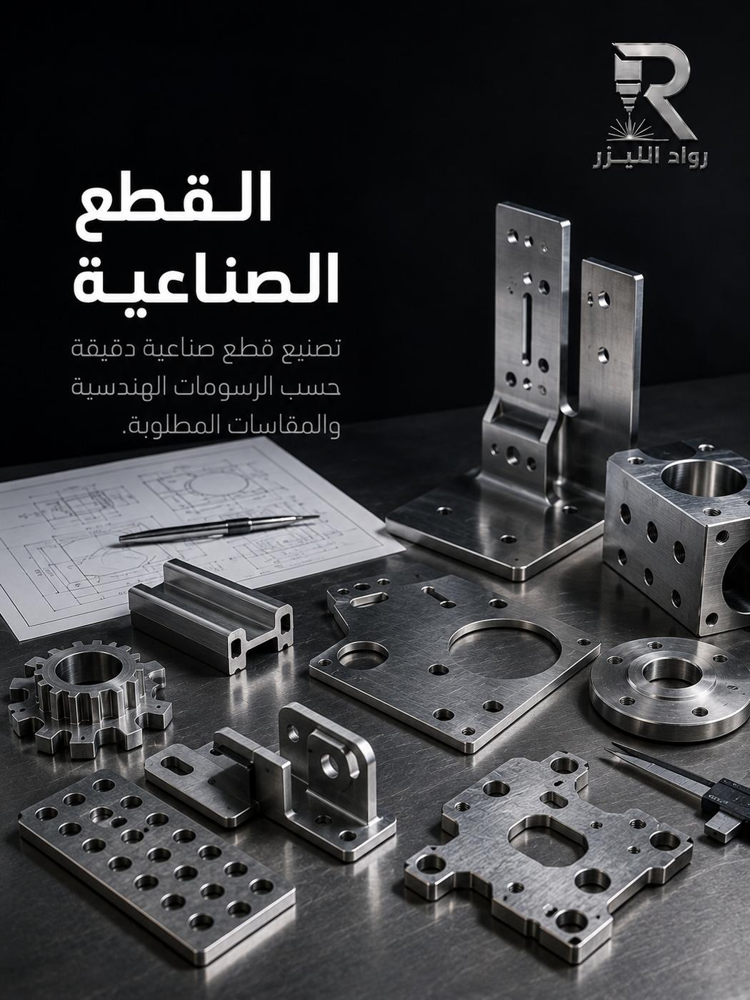
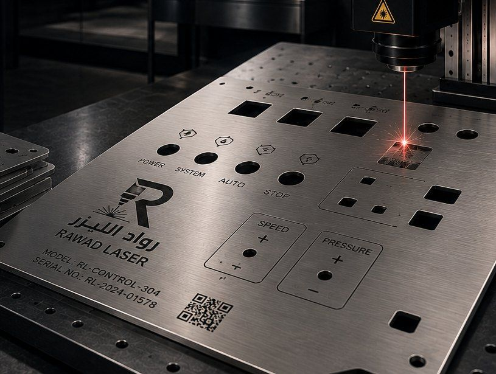
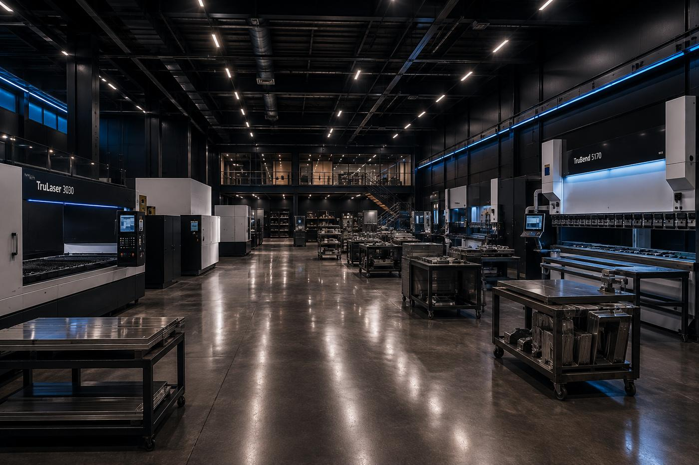

ألواح تثبيت وكراسي
ألواح بفتحات براغي بمواقع مضبوطة تطابق نقاط التثبيت في المعدّة أو الهيكل القائم.
توقّف خطّ إنتاج بسبب قطعة صغيرة لا يوجد بديل لها في السوق؟ نصنع القطعة من رسمك الهندسي أو من القطعة التالفة نفسها، بمواقع فتحات ومحاور مضبوطة — لأن قطعة بفرق مليمتر واحد لا تعمل.

الوضع مألوف في كل ورشة ومصنع: قطعة معدنية تكسّرت أو تآكلت، والمعدّة توقّفت، والمورّد الأصلي إما توقّف عن إنتاجها أو يطلب مدة توريد بالأسابيع وسعراً لا يتناسب مع حجم القطعة. والنتيجة أن التوقّف يكلّف أكثر بكثير من القطعة نفسها.
في معظم الحالات لا تحتاج القطعة الأصلية — تحتاج قطعة تؤدي نفس الوظيفة بنفس الأبعاد الحرجة. وهذا ما ننفّذه: نأخذ القطعة التالفة أو رسمها، نحدّد الأبعاد التي تهمّ فعلاً (مواقع الفتحات، المحاور، مناطق التلامس)، ونصنّع بديلاً يعمل مكانها.
وفي كثير من الحالات نستطيع تحسين القطعة لا مجاراتها فقط: إن كان العطل ناتجاً عن سماكة غير كافية أو معدن غير مناسب للبيئة، نقترح سماكة أعلى أو معدناً مقاوماً للتآكل ليطول عمر البديل عن الأصل — وهذا قرار نطرحه عليك لا نتخذه وحدنا.
ألواح بفتحات براغي بمواقع مضبوطة تطابق نقاط التثبيت في المعدّة أو الهيكل القائم.
قطع دائرية بفتحة مركزية وفتحات محيطية موزّعة بدقة على قطر محدد.
أدلة، مسارات، صفائح توجيه، وأجزاء تحتاج تكراراً مضبوطاً لتعمل مع بقية الخط.
قطع لا تُنتَج اليوم نعيد تصنيعها من الأصل، لتُبقي المعدّة القديمة في الخدمة.
الحلول المخصصة حسب الطلبأغلفة تحيط بأجزاء متحركة، مع فتحات تهوية ومراقبة وزوايا تطابق الهيكل القائم.
رقم القطعة أو الرمز أو كود QR منقوش عليها ليسهل تعريفها في المخزون لاحقاً.
الحفر والنحت على المعادنلا كل بُعد في القطعة حرج. تحديد الحرج منها يوفّر وقتاً وتكلفة ويجعل القطعة تعمل من المرة الأولى.
| البُعد | لماذا يهمّ | ما نطلبه منك |
|---|---|---|
| مواقع مراكز الفتحات | أهم بُعد في معظم القطع: إن انزاح المركز لن يدخل البرغي مهما كان القطر صحيحاً. | المسافة بين مراكز الفتحات، أو القطعة الأصلية لنقيسها بأنفسنا. |
| أقطار الفتحات | تحدّد نوع البرغي والخلوص المطلوب للحركة أو للتثبيت الثابت. | قطر البرغي المستخدم، أو القطر المطلوب إن كان محدداً في الرسم. |
| السماكة | تحدّد قوة القطعة تحت الحمل، وقد تكون سبب العطل الأصلي إن كانت غير كافية. | سماكة القطعة الأصلية، ووصف الحمل الذي تتعرّض له. |
| الأبعاد الخارجية | مهمة للتركيب داخل حيّز محدد، وأقل حرجاً إن كانت القطعة حرّة الحواف. | المقاس الخارجي، وهل هناك حيّز ضيّق يجب ألا تتجاوزه القطعة. |
| الزوايا بعد الثني | فرق درجة واحدة يمنع القطعة من الاستناد بشكل مستوٍ أو من مطابقة الهيكل. | زوايا الثني، أو القطعة القديمة لنقيس الزاوية الفعلية عليها. |
إن لم تكن متأكداً من القياسات، أرسل القطعة نفسها — القياس عندنا أدقّ من التقدير على الهاتف، ويمنع إعادة التصنيع.

قطع دقيقةمطابقة الرسم
لوحات تحكم قطع تثبيت
قطع تثبيت جاهزة للتسليم
جاهزة للتسليم
بيئة التنفيذالصور نماذج وتصورات بصرية توضح إمكانيات الخدمة.
قطع تُستهلك دورياً، ويُفضَّل توفير مخزون منها بدل انتظار التوريد عند كل عطل.
قطع بديلة لمعدّات عملاء مختلفة، تُصنع بسرعة لتقليل مدة التوقّف.
قطع تثبيت خاصة لا تتوفّر جاهزة، تُصنع بمقاس الموقع لتُنجز التركيب في وقته.
معدّة قديمة أو مستوردة لا تتوفّر قطعها في السوق المحلي — نصنع البديل محلياً.
أرسل القطعة أو صوراً واضحة مع القياسات، ونحدّد ما ينقصنا من معلومات بسؤال واحد أو اثنين.
نقيس ونحدّد ما يجب أن يكون مضبوطاً وما يمكن أن يكون تقريبياً — وهذا يوفّر عليك تكلفة.
قص بالليزر ثم ثني أو لحام إن احتاجت القطعة، مع فحص الأبعاد بين المراحل.
نطابق القطعة الجديدة مع الأصلية أو مع الرسم قبل التسليم، ونؤكد أن الفتحات في مواقعها.
بدء التنفيذ خلال 6 ساعات من الاعتماد، لأن قطعة الغيار غالباً طلب عاجل لا مؤجّل.
نقيس القطعة الأصلية بأنفسنا بدل الاعتماد على تقدير، ونؤكد الأبعاد الحرجة قبل التنفيذ.
إن كان العطل ناتجاً عن ضعف المادة نقترح معدناً أو سماكة أفضل — القرار لك.
نحفظ ملف القطعة، فالطلب القادم يبدأ من الإنتاج مباشرة لا من القياس والتحضير.
المرحلة التي تُنفَّذ فيها الفتحات والأشكال بدقة مطابقة للرسم.
اذهب إلى الصفحةللقطع التي تحتاج زوايا أو أضلاعاً مثنيّة لتطابق الهيكل القائم.
اذهب إلى الصفحةلتوفير مخزون من القطع التي تُستهلك دورياً بسعر أفضل للقطعة.
اذهب إلى الصفحةمن صورة مع قياسات: نعم. من صورة بلا قياسات: لا، لأن الصورة لا تعطي مقياساً موثوقاً. أضف مسطرة أو شريط قياس في الصورة، أو أرسل الأبعاد الأساسية وأقطار الفتحات ونبدأ من هناك.
الأبعاد ستكون مطابقة للأبعاد الحرجة، أما الجودة فتعتمد على المعدن الذي نختاره. في كثير من الحالات نصنع القطعة بمعدن أو سماكة أفضل من الأصل إن كان العطل يشير إلى ضعف في المادة الأصلية — ونشرح لك الخيار وتكلفته قبل التنفيذ.
القص بالليزر ينفّذ الأشكال المسطّحة والقطع المثنيّة والملحومة. أما القطع التي تحتاج خراطة أو تفريز أو أسناناً أو تجاويف بأعماق متفاوتة فهي عمليات مختلفة — أرسل الرسم ونخبرك بصراحة إن كانت خارج نطاق ما ننفّذه.
نعم، وهي من أكثر الطلبات التي تصلنا. أرسل القطعة أو صورها مع القياسات وأخبرنا بمدى الاستعجال، ونعطيك موعداً واقعياً — لا موعداً متفائلاً لا نستطيع الوفاء به.
أرفق صوراً واضحة مع القياسات وأقطار الفتحات، ووضّح المعدّة التي تعمل فيها القطعة ومدى الاستعجال.
أرسل القطعة أو صورها بالقياسات، ونعيد لك سعراً وموعداً واقعياً لتعود معدّتك للعمل.